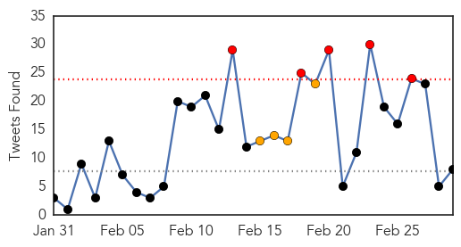
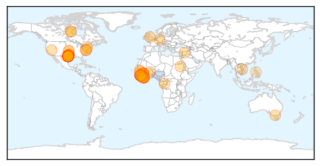

Ebola
30-Day Web Trend
0 alerts, 0 warnings

30-Day Twitter Trend
8 alerts, 6 warnings

Article Locations
Article Confidences
Top Articles:
- 1.000
- Prescription for avoiding Ebola airport screening: ibuprofen
- 1.000
- Sierra Leone Vice President Sumana in quarantine after guard dies of Ebola; is top most leader to do so
- 1.000
- Ebola Quarantines Vice President of Sierra Leone
- 0.999
- Sierra Leone vice president in Ebola quarantine
- 0.999
- Ebola ebbs but aid agencies warn against complacency
- 0.999
- Sierra Leone vice president in Ebola quarantine
- 0.998
- Sierra Leone veep in Ebola quarantine
- 0.998
- Sierra Leone's vice-president in quarantine for Ebola
- 0.998
- Ebola Aftermath
- 0.998
- Sierra Leone’s VP in self-quarantine after guard dies from Ebola - National
- 0.997
- At cusp of zero cases, Ebola returned by sea
- 0.997
- Sierra Leone's VP in quarantine over Ebola concern
- 0.997
- Sierra Leone's three-day Ebola shutdown ends
- 0.997
- Viruses like Ebola are mutating and that has scientists concerned
- 0.997
- Ebola in Sierra Leone: Vice-president in self-quarantine after guard dies
- 0.996
- Sierra Leone's Vice President in Quarantine for Ebola
- 0.995
- Sierra Leone VP in Ebola quarantine
- 0.995
- Sierra Leone's vice president in quarantine for Ebola
- 0.992
- Sierra Leone orphanage quarantined
- 0.991
- Sierra Leone's vice president in quarantine for Ebola
- 0.991
- Aust nurse under observation for Ebola
- 0.991
- Ebola outbreak: Sierra Leone vice-president quarantined
- 0.990
- Nurse who contracted Ebola to sue Texas hospital
- 0.990
- Senegal: Senegal: Ebola Virus Disease outbreak, Emergency Appeal n MDRSN010 - Operations update n 14
- 0.989
- US Ebola nurse says hospital 'failed her'
- 0.988
- Newspaper: Nurse who survived Ebola says hospital failed her
- 0.987
- Nurse who survived Ebola says Texas hospital failed her
- 0.987
- Criticism grows as Sierra Leone's Ebola shutdown enters final day
- 0.986
- Nurse who survived Ebola says hospital failed her
- 0.986
- Nina Pham, nurse who survived Ebola, plans to sue the hospital that 'failed her'
- 0.984
- Sierra Leone VP under self-imposed 21 day Ebola quarantine
- 0.983
- Sierra Leone vice-president under Ebola quarantine
- 0.983
- Newspaper: Nurse who survived Ebola says hospital failed her
- 0.981
- Nurse Nina Pham suing hospital where she contracted Ebola
- 0.980
- New Ebola Treatment ZMapp Is Ready For Human Clinical Trials
- 0.979
- Reuters Health News Summary
- 0.978
- Senegal: Ebola Virus Disease outbreak, Emergency Appeal n° MDRSN010 - Operations update n° 14 - Senegal
- 0.977
- Obama to meet Liberian president on Ebola
- 0.977
- SLeone vice president in Ebola quarantine asks country to pray
- 0.974
- Sierra Leone vice president in Ebola quarantine
- 0.972
- Asian herb derivative can work against Ebola
- 0.968
- Sierra Leone vice president in Ebola quarantine
- 0.967
- Dead Que. man tests negative for Ebola
- 0.965
- Texas Ebola nurse says hospital failed her and her colleagues
- 0.964
- Two children tested for Ebola
- 0.963
- West Aussies join ‘Florence Nightingale’ of Ebola crisis
- 0.961
- "Ebola Nurse" Nina Pham Will Sue Employer
- 0.958
- Ebola nurse to sue Dallas hospital parent company over training, privacy concerns
- 0.955
- Former Ebola Patient Nina Pham to File Lawsuit Against Texas Health Resources : Off-Key : Music Times
- 0.954
- Nurse Who Survived Ebola Plans To Sue Dallas Hospital
Showing top 50 articles...
Top Tweets:
- 0.911
- Nearly Halted in Sierra Leone, Ebola Makes Comeback by Sea - New York Times http://t.co/pKnUSBgshX ebola EVD
- 0.911
- Nearly Halted in Sierra Leone, Ebola Makes Comeback by Sea - New York Times http://t.co/BW1cjqPdHO ebola EVD
- 0.902
- A Gendered Lens on the Current Ebola Epidemic in West Africa http://t.co/OODjww8WIJ
- 0.900
- Ebola Survivor Nina Pham to Sue Texas Health Resources - NBC 5 Dallas-Fort Worth http://t.co/uY02g08plC ebola EVD
- 0.900
- Ebola Survivor Nina Pham to Sue Texas Health Resources - NBC 5 Dallas-Fort Worth http://t.co/k7jlq5E0jb ebola EVD
- 0.850
- Nina Pham's dog Bentley made it through Ebola crisis; President Obama takes ... - Dallas Morning News http://t.co/llSHtQDBg0 ebola EVD
- 0.844
- Nurse Who Survived Ebola Says Hospital Failed Her - ABC News http://t.co/Gf4eZufBpG ebola EVD
- 0.769
- ZMapp Ebola Trial Starts In Liberia: Is It Too Late? - Forbes http://t.co/MMchSfNp2h ebola EVD
- 0.718
- An interesting look at the Ebola virus by the numbers http://t.co/nMvLWd6iQs
- 0.656
- The fear of Ebola led to slayings — and a whole village was punished - Washington Post http://t.co/tpX3qwwiL3 ebola EVD
- 0.656
- The fear of Ebola led to slayings — and a whole village was punished - Washington Post http://t.co/aa7YXHVDZa ebola EVD
- 0.656
- The fear of Ebola led to slayings — and a whole village was punished - Washington Post http://t.co/2Q6iIdb34E ebola EVD
- 0.607
- 'I left my baby behind to help with the ebola crisis in Liberia' - The Guardian http://t.co/WsklnHAvyd ebola EVD
- 0.541
- The Brother Went To Fight Ebola. So Did His Sister. Mom Was 'A Wreck' - NPR (blog) http://t.co/GFyz7bQW7p ebola EVD
- 0.529
- The fear of Ebola led to murder — and a whole village was punished - Washington Post http://t.co/slGtmIsesW ebola EVD
Swine Flu
30-Day Web Trend
15 alerts, 9 warnings

30-Day Twitter Trend
3 alerts, 0 warnings

Article Locations

Article Confidences
Top Articles:
- 1.000
- 34 more fall prey to swine flu; death toll climbs to 1,075
- 1.000
- First swine flu death in Nepal
- 1.000
- 34 more fall prey to swine flu; toll climbs to 1,075
- 0.999
- Swine flu could spread to Pakistan: Ansar Burney
- 0.999
- Swine flu may spread to Pakistan
- 0.999
- Swine flu claims 36 more lives, toll rises to 1,040, over 19,000 affected
- 0.998
- Swine flu in Mumbai: Number of cases will rise drastically due to change in weather
- 0.998
- Swine influenza strengthening roots in Nepal
- 0.998
- Govt to Bear Entire Cost of Swine Flu Treatment: Maharashtra CM
- 0.998
- Salman Khan to undergo swine flu tests following Sonam's scare
- 0.998
- Maharashtra government to bear swine flu treatment cost: CM
- 0.996
- Swine flu death cases in India rising, Pakistan at risk
- 0.995
- Bengal hospitals refusing swine flu patients
- 0.995
- Maha govt to bear swine flu treatment cost: CM
- 0.994
- Flu shield missing, docs fear infection
- 0.993
- Two more die, 45 fresh swine flu cases in city
- 0.993
- Swine flu strikes Sonam Kapoor in Rajkot
- 0.993
- Contradicting reports on Sonam Kapoor's health
- 0.991
- The Indian Express
- 0.986
- Read Health News & Articles at TheHealthSite.com
- 0.986
- Sonam Kapoor tests positive for swine flu
- 0.967
- Cong leader in Ratlam dies of swine flu
- 0.962
- Swine flu claims one more life in WB, toll rises to eight
- 0.959
- Akhilesh Yadav asks media to refrain from creating panic about swine flu
- 0.941
- Bollywoods Sonam tests positive for swine flu
- 0.929
- Mumbai: Sudden rains can wreak havoc on your health
- 0.924
- Salman Khan to undergo tests for swine flu?
- 0.920
- Sonam Kapoor tests positive for swine flu
- 0.918
- Actress Sonam Kapoor tests positive for swine flu, flown to Mumbai
- 0.900
- Swine flu claims life in Kathmandu
- 0.898
- Sonam Kapoor returns to Mumbai for Swine flu treatment
- 0.894
- 'Sonam Kapoor suffering from cough and cold, not swine flu'
- 0.885
- 37 new swine flu cases put city tally at 505
- 0.847
- Sonam Kapoor Admitted In Mumbai Hospital
- 0.830
- Vohra reviews H1N1 with central team
- 0.815
- Sonam Kapoor tested positive for swine flu, treated at Rajkot hospital : Celebrities, News
- 0.788
- Sonam Kapoor Tests Positive For Swine Flu
- 0.780
- Sonam Kapoor tests positive for swine flu, admitted in Sterling Hospital
- 0.720
- Swine flu claims one more life in West Bengal, death toll rises to eight
- 0.662
- The Shillong Times
- 0.649
- Prem Ratan Dhan Payo: Lesser known facts
- 0.608
- Doctors on strike, hospitals hit
- 0.598
- Sonam Kapoor flown to Mumbai for swine flu treatment
- 0.575
- Actress Sonam Kapoor taken to Mumbai for swine flu treatment
- 0.554
- Sonam Kapoor taken to Mumbai for swine flu treatment
- 0.548
- Sonam Kapoor taken to Mumbai for swine flu treatment
Top Tweets:
-
No tweets found for Mar 01, 2015